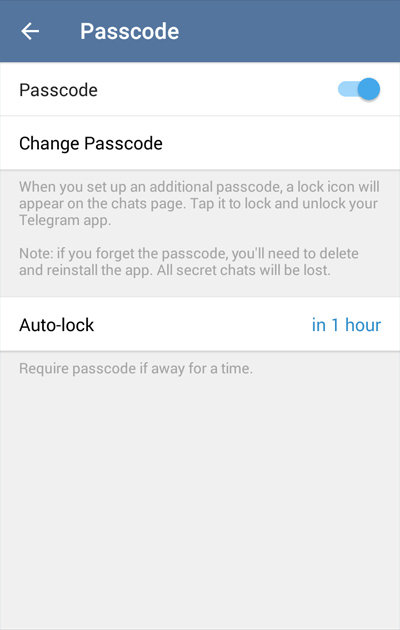
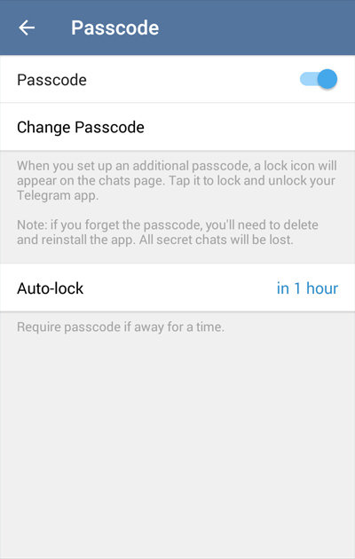

Photo Editor and Passcode Lock

Today’s update to our iOS and Android apps reflects the essence of Telegram — a combination of easy-to-use privacy tools and popular mass market features.
Photo Editor
Each day Telegram users share 35 million photos, and this number is growing by the hour. For comparison, Instagram users shared 70 million photos daily in December. Yet up until now, messaging app users couldn’t enjoy a photo editing experience on the level that is offered by photo-sharing apps. We’re changing this today.
With the new photo editor, you can crop, rotate and auto-enhance photos before sending them. On top of that, you can use Photoshop-class granular controls for brightness, contrast, warmth, saturation, highlights, sharpening, blurring and more.
The auto-enhance tool is our favorite though — it can improve photos in an instant.


Passcode Lock
Telegram is one of the few messaging apps that can be used on multiple devices at once. While this is definitely convenient, it also raises the bar when it comes to privacy. What if one of your Telegram devices, e.g. an iPad or another tablet, is sometimes used by your colleagues or family members?
In order to give you more control in such cases, we are introducing passcodes. Starting today, you can lock your iOS or Android device with a passcode – a simple 4-digit PIN or a longer password. The iOS app, and soon the Android app as well, can use passwords to encrypt the local database against such extreme cases as phone theft.

 


Since unlocking Telegram each time can get annoying, we implemented both manual and auto-lock. You can lock the app manually from the chats screen or enable auto-lock after a specified period of inactivity. iOS users can use Touch ID to unlock the app.
February 25, 2015
The Telegram Team